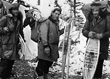
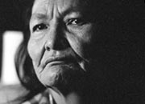
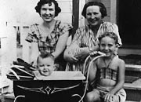
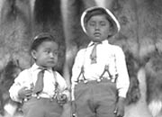
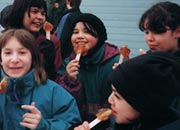
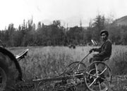

La population du territoire a connu de grands changements à la fin du 19e siècle. Il n’y avait probablement pas plus de 4 000 Autochtones et 1 000 commerçants et prospecteurs non-autochtones. En quelques années, les chiffres ont grimpé jusqu’à 40 000. Les Américains devaient composer environ 75 % du groupe des chercheurs d’or. Selon James Walsh, le premier commissaire du territoire, seulement environ 25 % des résidents étaient des sujets de Sa Majesté et seulement la moitié de ceux-ci étaient Canadiens. Une situation semblable s’est produite dans les années 1940, durant la construction de la route de l’Alaska, où la majorité de la population était d’origine américaine.
En 1928, la population du Yukon avait chuté à 3 500, dont environ 40 % était d’origine autochtone. À ce moment, Dawson était l’agglomération la plus populeuse, avec environ 1 000 habitants. Avec 500 habitants, Keno avait une population plus nombreuse que Whitehorse.
Aujourd’hui, le Yukon se situe à l’avant-dernier rang au Canada en ce qui concerne la densité de population. La densité de population de l’Île du Prince-Édouard est presque 50 fois plus élevée que celle du Yukon. Environ 34 000 personnes habitent au Yukon, dont 7 000 Autochtones. Le pourcentage de femmes au Yukon est passé de 15 %, en 1901, à 48 % aujourd’hui.
«Quatorze d’entre nous ont pris la route du Nord. Je ne crois pas que si M. Gallup avait été ici lui-même il aurait obtenu un échantillon plus représentatif de la population du Yukon que les femmes et les hommes présents.»
Laura Berton (écrivant à propos de son périple en diligence entre Whitehorse et Dawson en 1909) : I Married the Klondike.
La communauté franco-yukonnaise
La communauté franco-yukonnaise est composée de gens venus de toutes parts au Canada et dans le monde. Ces pionniers ont su préserver leurs valeurs et leur langue. Les Francophones sont au Yukon depuis les beaux jours du commerce des fourrures.
Une des pionnières les mieux connues est Émilie Tremblay. Émilie est arrivée au Yukon avec son mari en 1894, devenant la première femme non-autochtone à franchir le col Chilkoot. Le couple s’installa au ruisseau Miller, dans la région de Fortymile, un des premiers sites miniers du Yukon. À l’automne 1895, il s’absenta durant quelques années pour ne revenir au Yukon qu’en 1898. Émilie est restée au Yukon jusqu’au début des années 1940; elle est décédée à Victoria en 1949 à l’âge de 77 ans.
Passer au tableau Vivre des ressources de la terreQui nous étions; où nous en sommes
(Ci-dessus) Joe Hatfield dans le mess des officiers à Watson Lake (Janvier 1945).
YA, collection Turner, 88/16 nº 48A
Alex Van Bibber, Curley Desrosiers et Harry Cooper en prospection dans la région de la rivière Firth (1948). Cooper a piloté son propre avion pour se rendre.
AY, collection A. Van Bibber, 92/98 nº 15
Rosie Silverfox, aînée de la Première nation Selkirk (1987).
AY, collection de la Première nation Selkirk nº 9658
Jean Todd et Amy Wilson avec une fillette et un bébé, Whitehorse (1951).
AY, collection Todd nº 9009
Deux jeunes garçons à Teslin (sans date).
AY, collection G. Johnston, 82/428 nº 75
Un groupe d’enfants mangeant de la tire d’érable sur la neige. Chaque année, l’Association franco-yukonnaise (AFY) organise une activité «Cabane à sucre» dans le cadre du festival d’hiver Rendezvous.
l'Association franco-yukonnaise
Moose Jackson sur un râteau, région du lac Dezadeash (sans date).
AY, collection Beloud, 92/29 nº 1